MSU Graduate Spatial Ecology Lab 4
Phoebe Zarnetske; plz@msu.edu
Sep 2015; rev. Sep 24, 2019, Sep 23-27, 2020, Sep 27, 2022
Lab 4: Spatial Autocorrelation (Moran’s I, Mantel Test)
This lab has 2 Parts. You need to hand in Part 2 as a PDF produced from R Markdown, including output plots, statistics, code, and text for answers to the questions below. When referring to the code below it may be more useful to use the .Rmd file linked above. OPTIONAL: If you would like to test out GitHub in completing this lab, complete your .Rmd file in RStudio and push your PDF (and your .Rmd if you want) to a repository. You can add the link to the GitHub file when you submit to D2L. Please also submit your PDF to D2L.
This lab uses the the brycesite environmental data from the R package labdsv.
The variable list for the site variables is here: https://www.rdocumentation.org/packages/labdsv/versions/2.0-1/topics/brycesite. A few notes: east=easting; north=northing; elev is recorded in feet; we will convert to metric.
These data come from a vegetation survey in Bryce Canyon National Park, Utah. It’s an amazing place with unique formations! For more about Bryce Canyon see: https://www.nps.gov/brca/index.htm

https://upload.wikimedia.org/wikipedia/commons/4/4d/USA_10654_Bryce_Canyon_Luca_Galuzzi_2007.jpg
Part 1: More practice plotting spatial data
Start working in R:
##### STARTING UP R
# Clear all existing data (or don't and just make sure you start with a newly opened RStudio session; see why this may not be so great for reproducibility: https://rstats.wtf/save-source.html#rm-list-ls)
rm(list=ls())
# Close graphics devices
graphics.off()
# Set the paths for your work
output_path<-("output")
# if this folder doesn't exist, create it
if(!dir.exists(output_path)){
dir.create(output_path)
}
# Create the folders (directories) "data" and "lab4" - If they exist already, this command won't over-write them.
data_path<-(file.path("data","lab4"))
if(!dir.exists(data_path)){
dir.create(data_path,recursive = TRUE)
}If you previously saved your workspace and want to load it here, do so this way:
load(file.path(output_path,"lab4.RData"))
NOTES on R packages used in this lab:
- With R Markdown, it is helpful to install packages locally before knitting. Load the packages:
library(sf)
library(tidyverse)
library(ggplot2)
library(tmap)
library(ape)
library(ncf)
library(labdsv)
library(FedData)
library(ggspatial)
library(ggmap)
library(gt)
library(broom)
library(raster)
# Apply ggplot2 theme to remove gray background and set the base font size as 14. See: https://ggplot2.tidyverse.org/reference/ggtheme.html for more theme options.
theme_set(theme_classic(base_size = 14))
# Call the data directly because it's loaded in the labdsv R package
data(brycesite)
# Plot the data in space, by elevation (brycesite has northing and easting so it's projection is UTM). Here we will use the sf R package.
head(brycesite)
site <- brycesite %>%
drop_na(east, north) %>% # drop missing locations
mutate(elev_m = elev * 0.3048) # create new column; convert feet to meters
st_crs(site) # CRS for site doesn't exist because it's a dataframe (not spatial feature)
# Define CRS using the sf package
crs.geo <- st_crs("+proj=utm +zone=12 +datum=WGS84")
# Make site into a spatial feature using sf package; assign its projection
site <- site %>%
st_as_sf(coords = c("east", "north"),
crs = crs.geo)
# Plot it with ggplot
site %>%
ggplot(aes(color = elev_m)) + geom_sf() +
scale_color_viridis_c(option = "viridis",
name = "Elevation (meters)")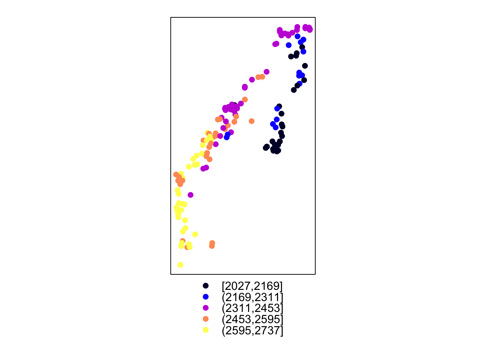
# Plot it with tmap
# tmap
tm_shape(site) + tm_bubbles(palette = "viridis",
col = "elev_m",
size = 0.25)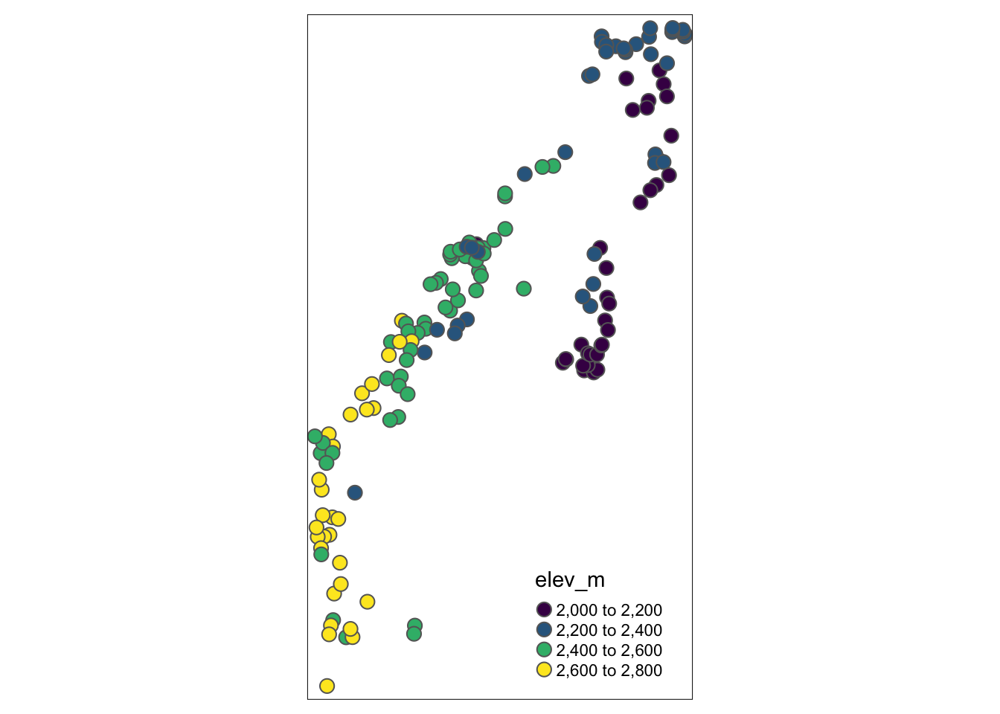
# Take a look at the underlying elevation from the National Elevation Dataset (NED) using the FedData R package. The FedData package works best if you use a spatial object created with the sp package.
site.sp<- as(site, "Spatial")
# Returns a raster
NED <- get_ned(
template = site.sp,
label = "bryce"
)
# If you have trouble with FedData package, the Lab4_NED data are on D2L in Lab 4's section as "Lab4_NED.RData". Simply save it, and open it in R.Plot the elevation raster and the vegetation data plot locations on the same map. Practice using ggplot2 for this plotting. First, project the raster to the veg data projection so we can plot them together (you could instead project the veg data shapefile (which is vector data) with the raster CRS, and you should project vector rather than the raster if you plan on doing any spatial analysis with them both). We’re just plotting so it’s ok.
raster::crs(NED)
# Define crs using the raster pacakge
crs.geo.r <- CRS("+proj=utm +zone=12 +datum=WGS84") # set CRS
NED <- projectRaster(NED, crs = crs.geo.r)
# Create a dataframe out of the NED raster. This is a necessary step for plotting rasters with ggplot2.
NED_df1 = as.data.frame(NED, xy = TRUE)
head(NED_df1)
NED_df1 <- NED_df1 %>%
drop_na()
# Rename the elevation column
NED_df <- NED_df1 %>%
rename(elev_NED = layer)
# Plot the NED with the points overlaid using ggplot. See how the elevation in the points aligns with the NED
NED_elev<-ggplot() +
geom_raster(data = NED_df,
aes(x = x, y = y, fill = elev_NED)) # x and y are defined as the column names, "x" and "y"; "elev_NED" is the elevation column
# Now add on the vegetation plots and their associated elevation from the elevdat data, and change the color of the raster.
NED_elev <- ggplot() +
geom_raster(data = NED_df, aes(x = x, y = y, fill = elev_NED)) +
geom_sf(data = site, aes(color = elev_m)) +
scale_fill_viridis_c(option = "viridis",
name = "NED Elevation (m)") +
scale_color_viridis_c(option = "plasma",
# direction = -1,
name = "Plot Elevation (m)") +
annotation_scale(location = "br",
width_hint = 0.5) +
annotation_north_arrow(location = "br",
which_north = "true",
pad_x = unit(0.75, "in"),
pad_y = unit(0.5, "in"),
style = north_arrow_orienteering) +
labs(title = "Bryce Canyon Vegetation Plot Elevation") +
ylab("Latitude") +
xlab("Longitude")
NED_elev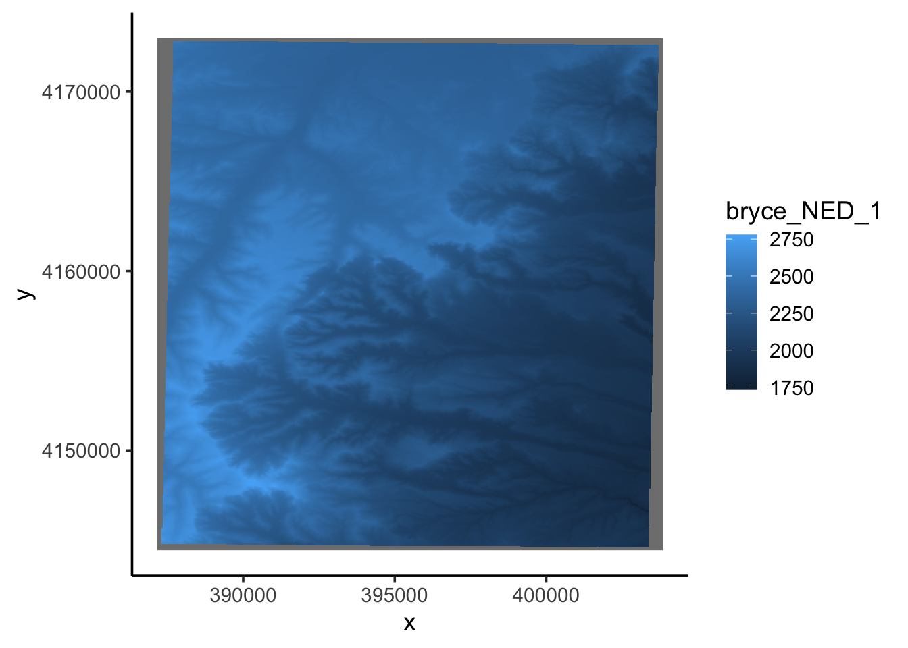
# Plot with tmap:
tm_shape(NED) +
tm_raster(alpha = 0.75, legend.show = FALSE) +
tm_shape(site) + tm_bubbles(palette = "viridis",
col = "elev_m",
size = 0.25)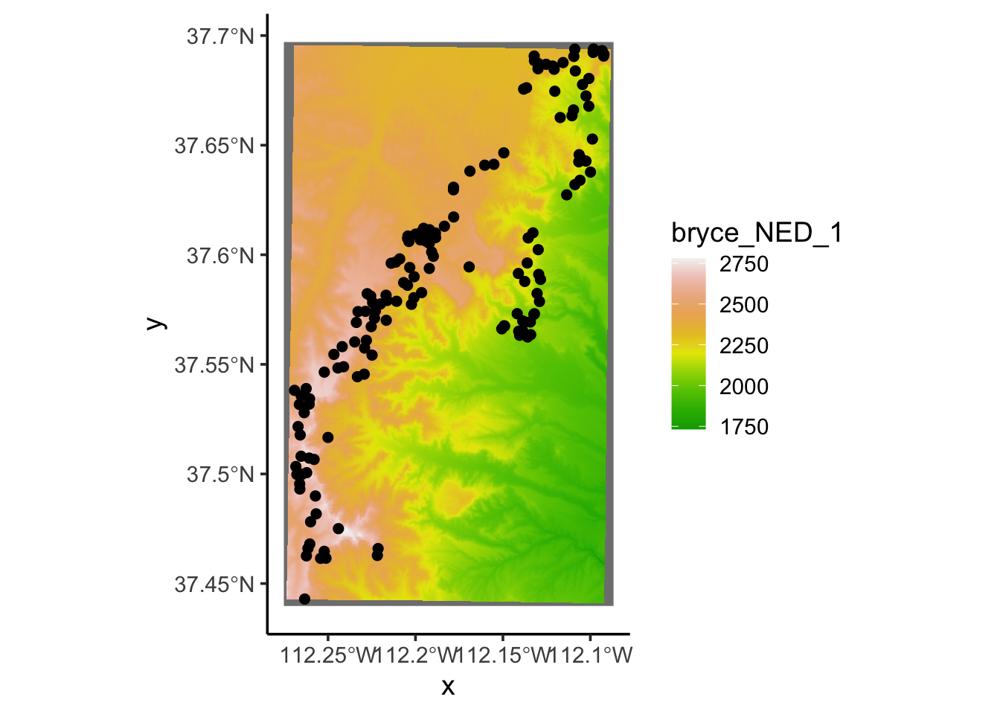
Or you could use ggmap to pull in a terrain map and
overlay the plots on top. This ggmap uses Lat Lon, which isn’t as
ideal for inter-point distances. It’s better to stick with analysis
using the UTM meters. But this ggmap can make some nice maps. It also
has terrain options, roads, etc.
?get_stamenmap # see the details on the commands
bc_map <- get_stamenmap(bbox = c(left = -112.5, bottom = 37.25,
right = -111.9, top = 37.8),
zoom = 10)
ggmap(bc_map)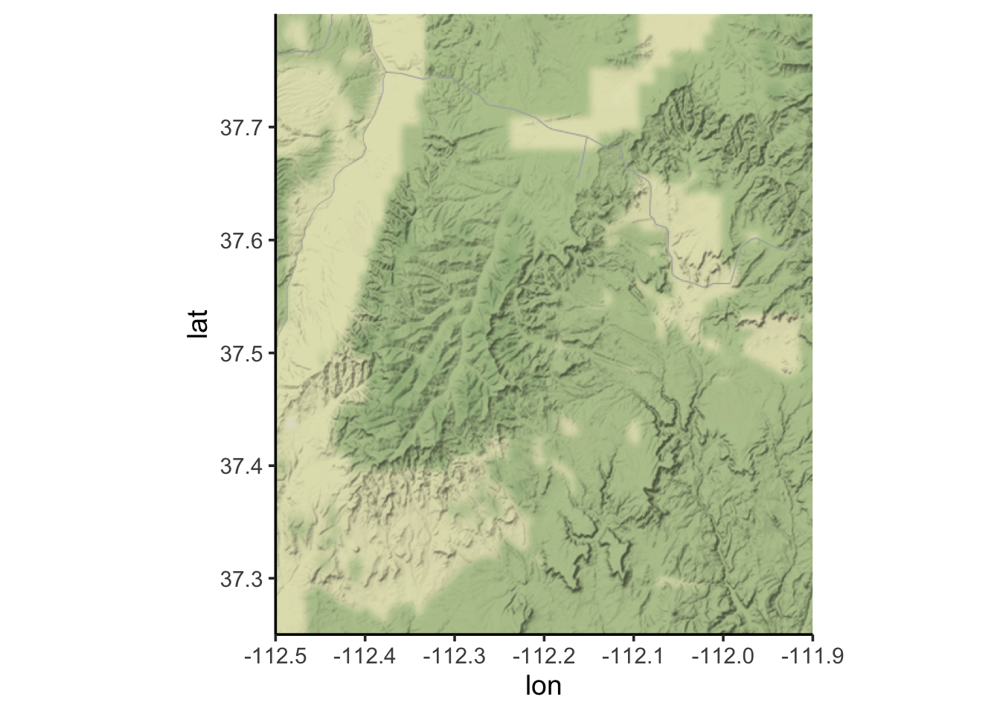
OPTIONAL: see if you can overlay the elevation plots on this ggmap terrain map.
Part 2: Moran’s I and Mantel test
Moran’s I in package ape
Check assumptions about the elevation data; an assumption of the Moran’s I test is that data are normally distributed. Determine whether data should be transformed. Some transformations to consider: square-root, log.
hist(site$elev)
shapiro.test(site$elev)##
## Shapiro-Wilk normality test
##
## data: site$elev
## W = 0.95485, p-value = 5.093e-05qqnorm(site$elev)
qqline(site$elev,col="blue")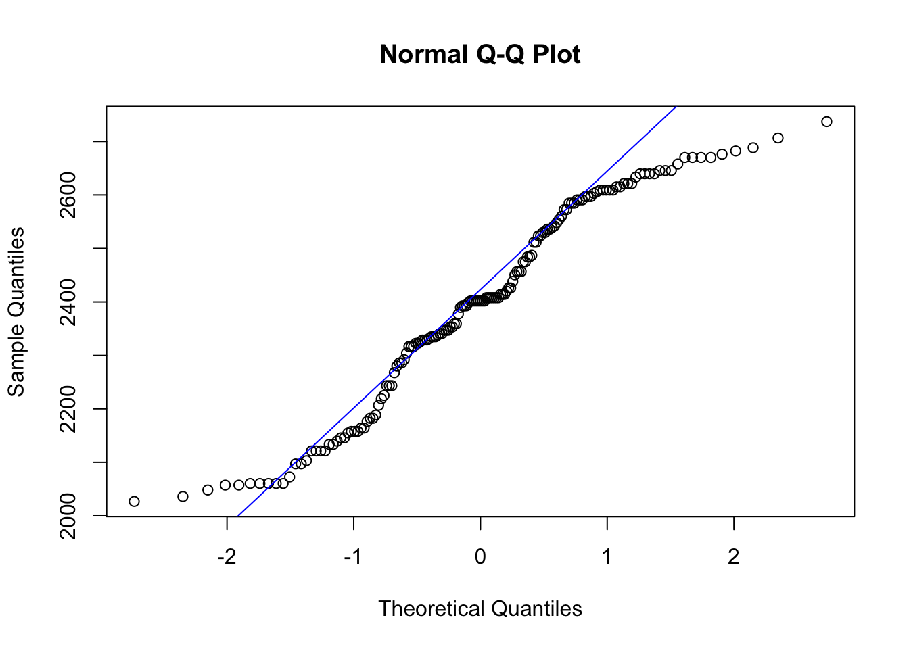
shapiro.test(log(site$elev))##
## Shapiro-Wilk normality test
##
## data: log(site$elev)
## W = 0.94937, p-value = 1.689e-05qqnorm(log(site$elev))
qqline(log(site$elev),col="red")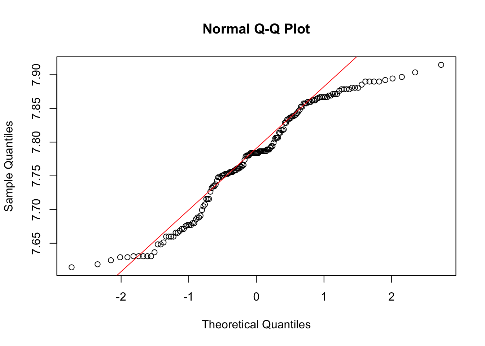
site$log.elev <- log(site$elev)
# Tidy up the output; use broom and gt packages
shap_test_elev <- tidy(shapiro.test(site$elev_m))
shap_test_elev %>%
gt() %>%
tab_header(title = "Shapiro Test (elevation)")| Shapiro Test (elevation) | ||
| statistic | p.value | method |
|---|---|---|
| 0.9548468 | 5.092745e-05 | Shapiro-Wilk normality test |
shap_test_lelev <- tidy(shapiro.test(log(site$elev_m)))
shap_test_lelev %>%
gt() %>%
tab_header(title = "Shapiro Test (log elevation)")| Shapiro Test (log elevation) | ||
| statistic | p.value | method |
|---|---|---|
| 0.9493736 | 1.689473e-05 | Shapiro-Wilk normality test |
# You can combine them into 1 table like this:
shap_test_df <- data.frame(var = c("elev_m", "log_elev"),
statistic = c(shap_test_elev$statistic, shap_test_lelev$statistic),
p.value = c(shap_test_elev$p.value, shap_test_lelev$p.value))
shap_test_df %>%
slice(1:2) %>%
gt() %>%
tab_header(title = "Shapiro Test Results")| Shapiro Test Results | ||
| var | statistic | p.value |
|---|---|---|
| elev_m | 0.9548468 | 5.092745e-05 |
| log_elev | 0.9493736 | 1.689473e-05 |
# add easting and northing column to site_sf object
site_coords <- site %>%
st_coordinates() %>%
as.data.frame()
site <- site_coords %>%
bind_cols(site) %>%
rename(east = X, north = Y)
# Compute distance matrix
data.dist <- as.matrix(dist(cbind(site$east,site$north)))
# Check the maximum distance within the site (units = meters)
max(data.dist)## [1] 31583.48# Create an inverse distance matrix
w <- 1/data.dist
diag(w) <- 0
# Histogram breaks & counts
hist(data.dist)$breaks## [1] 0 2000 4000 6000 8000 10000 12000 14000 16000 18000 20000 22000
## [13] 24000 26000 28000 30000 32000hist(data.dist)$counts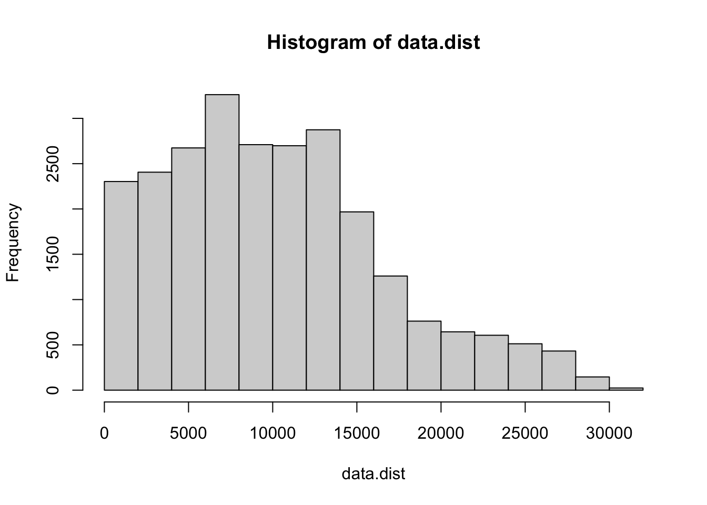
## [1] 2303 2406 2674 3262 2710 2698 2874 1968 1260 762 644 606 512 432 146
## [16] 24# Plot the distance matrix with one option of Distance classes
# (note: these may not be the most informative classes)
hist(data.dist,
main="Histogram of distances with classes chosen",
xlab="Distance (meters)",
col="gray",
ylim=c(0,4500))
abline(v=c(0,4000,8000,12000,16000,20000,24000,28000),
col="purple",
lwd=2)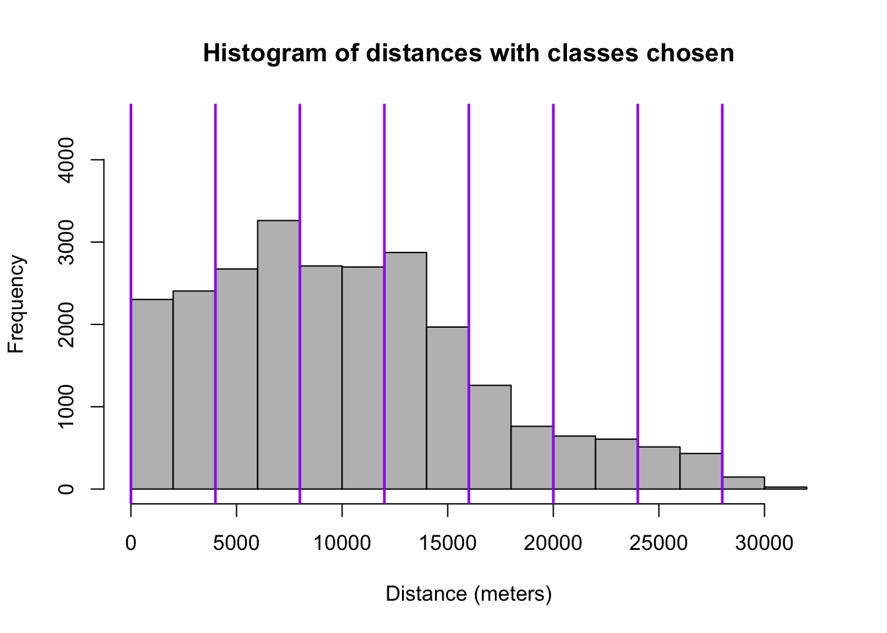
#Compute Moran's I
Moran.I(site$log.elev, w, scaled = T, na.rm = T, alternative = "two.sided")## $observed
## [1] 0.5036994
##
## $expected
## [1] -0.006329114
##
## $sd
## [1] 0.01934851
##
## $p.value
## [1] 0Moran.I(site$elev, w, scaled = T, na.rm = T, alternative = "two.sided")## $observed
## [1] 0.5048929
##
## $expected
## [1] -0.006329114
##
## $sd
## [1] 0.0193532
##
## $p.value
## [1] 0QUESTION 1:
Interpret Moran’s I results. Is there a more appropriate form of elevation data (transformed or non-transformed) for this test?
Next, create a Correlogam for Elevation using correlog
using a specific increment for distance classes (here shown with 1000m
increments; use a different distance class in your example).
cor.elev <- correlog(site$east, site$north, site$elev, increment = 1000, resamp = 100)
plot(cor.elev, col = "blue")
abline(h = 0, col = "purple")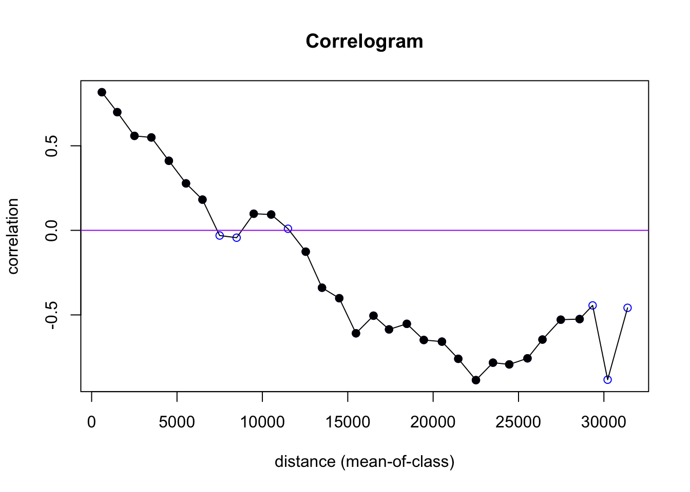
cor.lelev <- correlog(site$east, site$north, site$log.elev, increment = 1000, resamp = 100)
plot(cor.lelev, col = "red")
abline(h = 0, col = "purple")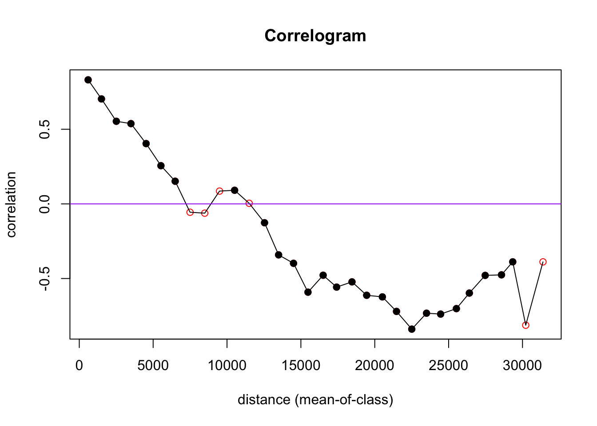
fit <- invisible(correlog(x = site$east, y = site$north, z = site$elev, resamp = 100, increment = 1000))
#How many classes are significant by alpha = 0.05?
length(which(fit$p <= 0.05))
plot(fit$mean.of.class, fit$correlation, pch = 19, "black", ylab = "Correlation coefficient", xlab = "Distance (mean of class)", main = "Correlogram for elevation change")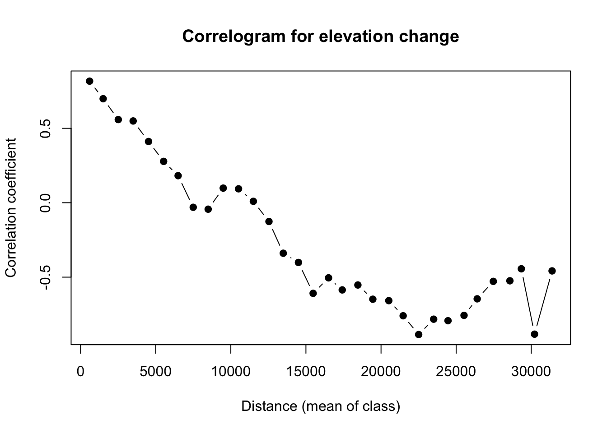
# You can also try other R packages like pgirmess, to make correlograms (note that the function has the same name "correlog" in both R packages; you need to specify which one to use).
pgi.cor <- pgirmess::correlog(coords=site_coords, z=site$elev, method="Moran", nbclass=20)
plot(pgi.cor)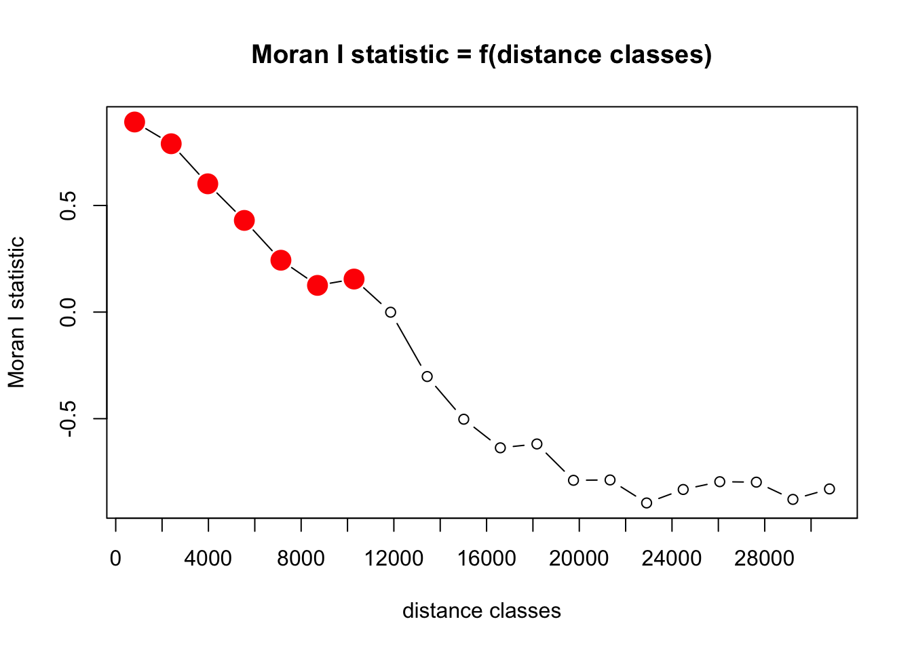
QUESTION 2:
Plot and interpret your correlograms. Explain your choice of Distance Classes.
QUESTION 3:
Perform a statistical test to determine if your peaks are
significant. Hint: look at your correlog output. Which ones
are significant?
Mantel Test
Now use the Mantel test to compare differences in elevation at specified points to the distance between those points. This will help you determine whether plots that are closer together have more similar elevations, and if plots that are farther apart have more dissimilar elevations. In this case we’re treating the space between sampling locations (their geography) as the predictor variable which is predicting the elevation values.
# We already have the euclidean distance matrix (data.dist)
# Compute the distance between elevation measurements
elev.dist <- as.matrix(dist(cbind(site$elev, site$elev)))
# Run a Mantel test on the two matrices
mant.results <- ape::mantel.test(m1 = data.dist, m2 = elev.dist, nperm = 999, alternative = 'two.sided')Next, choose a NEW VARIABLE from the brycesite
dataframe. Plot the variable in space (see the code for plotting
elevation on a map, above). The variable list for the site variables is
here: https://www.rdocumentation.org/packages/labdsv/versions/2.0-1/topics/brycesite.
QUESTION 4:
What are the general patterns of the NEW VARIABLE across space? Do you expect your NEW VARIABLE to be spatially correlated with elevation across the study region? Why or why not?
QUESTION 5:
Run a Mantel test to look at correlations between the matrices of the
two variables (a Mantel test between your NEW VARIABLE distance matrix
and elev.dist).
You will need to create your NEWVARIABLE.dist like
this:
NEWVARIABLE.dist <- as.matrix(dist(cbind(site$NEWVARIABLE, site$NEWVARIABLE)))
Interpret the results of the Mantel tests relative to your
predictions from Question 4. You may want to run correlog()
on your NEW VARIABLE to help with interpretation.

This
work is licensed under a
Licensed
under CC-BY 4.0 2020; 2022 by Phoebe Zarnetske. Special thanks to Nan
Nourn for updates related to sf, tmap, gt R packages.